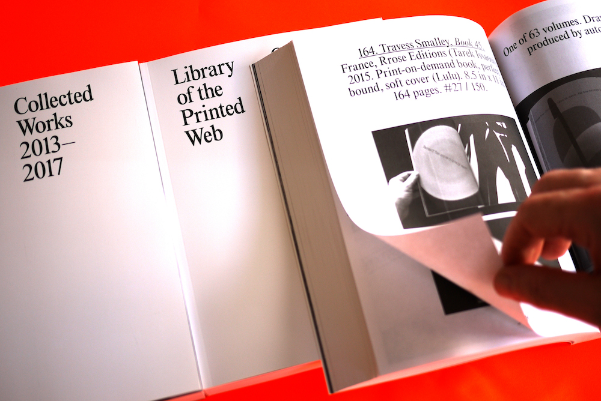
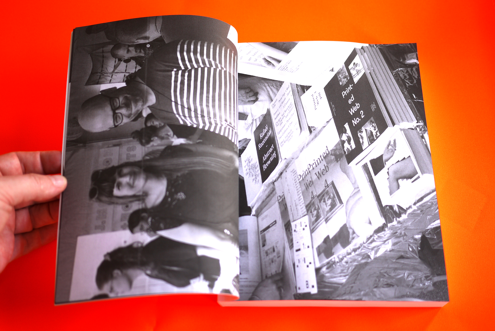
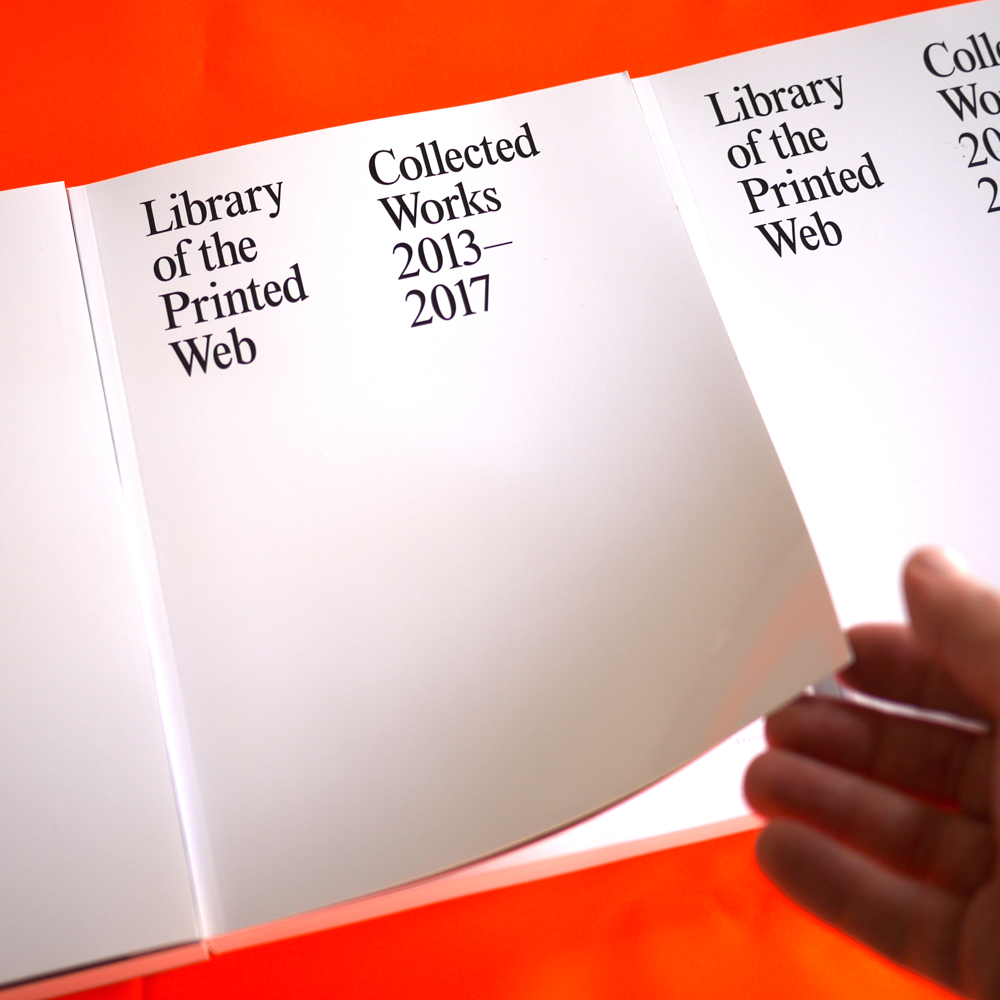

Library of the Printed Web: Collected Works 2013–2017 (2017)

Paul Soulellis, editor
7.44 in. x 9.68 in. soft-cover print-on-demand book
548 pages + cover

A complete catalogue of Library of the Printed Web as acquired by MoMA Library, with texts by Sal Randolph, David Senior & Sarah Hamerman, and Paul Soulellis.


Purchase print book
Download PDF
